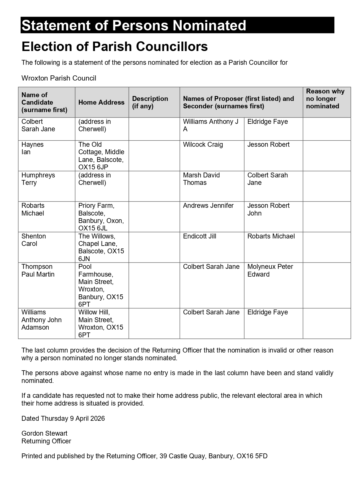
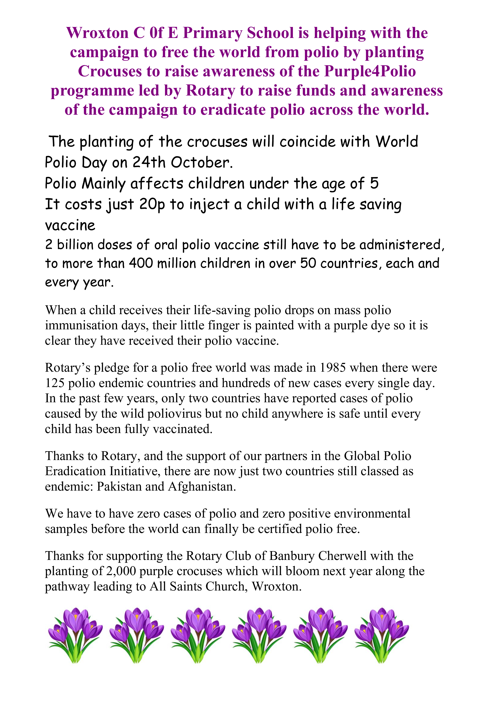

Latest News

Parish Council Election – Statement of Nominated Candidates
The statement of persons nominated for the upcoming parish council election has now been published. This document provides details of all candidates standing for election and is available for residents to view.
Updates to Newspaper service
The Village Store in Bishops Itchington is looking to launch a daily newspaper delivery service for the village. Several residents have already expressed interest, and a few more households are needed to make the service viable.
If you would like national or local newspapers, magazines, or periodicals delivered to your door—either daily or weekly—please get in touch.
The Village Store is a long‑established, family‑run business offering early morning deliveries and serving the local area for over 20 years.
Contact
Tel: 01926 612387
Email: thevillagestorebishops@gmail.com



Purple4Polio Crocus Planting – Wroxton
Wroxton C of E Primary School is helping with the campaign to free the world from polio by planting crocuses to raise awareness of the Purple4Polio programme led by Rotary. The initiative raises funds and awareness for the global campaign to eradicate polio.
The planting of the crocuses will coincide with World Polio Day on 24th October. Polio mainly affects children under the age of five, and it costs just 20p to vaccinate a child with the life-saving oral polio vaccine.
Around 2 billion doses of oral polio vaccine are administered each year to more than 400 million children in over 50 countries. During mass immunisation days, a child’s finger is marked with purple dye to show they have received their vaccine.
Rotary began its mission to eradicate polio in 1985 when there were 125 endemic countries and hundreds of new cases each day. Today only two countries remain endemic: Pakistan and Afghanistan.
To finally certify the world as polio-free, there must be zero cases of polio and zero positive environmental samples worldwide.
Thank you for supporting the Rotary Club of Banbury Cherwell and the planting of 2,000 purple crocuses which will bloom next year along the pathway leading to All Saints Church, Wroxton.